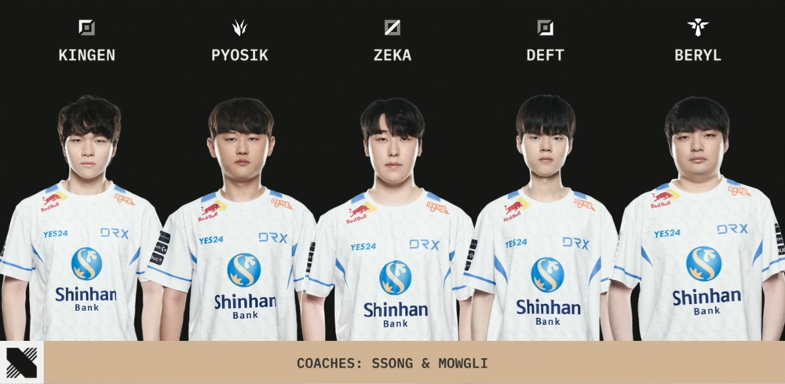

디알엑스가 운영하는 리그 오브 레전드 프로게임단. 2012년 5월 7일에 공식 창단되었다. 초창기인 LG-IM 시절부터 크나큰 두각을 못 드러낸채 긴 암흑기와 여러 사건들과 사고가 있었으나, 2017년 서머부터 본격적인 두각을 드러내면서 2018년 스프링까지 정규시즌과 포스트시즌-플레이오프에서 모두 1위를 달성하였고, 이에 LCK 팀 최초의 2회 연속 통합 우승을 달성하였다. 리그 오브 레전드 2022 월드 챔피언십의 우승으로 플레이-인 스테이지에서 시작해 우승까지 이룬 최초이자 유일한 팀이면서 T1-GEN-DK를 잇는 LCK의 네 번째 월드 챔피언십 우승팀이다. 동시에 2020년부터 고착화 되고 있던 LCK의 월즈 우승팀간의 담티젠 3강 구도를 깨고 새 시대를 연 팀이다. 팀 약자는 팀명 그대로 DRX.[7] 정식 발음법 및 공식 경기에서 불리는 읽는 법은 '디알엑스'이다.[8]2022 월즈 우승 이후로 사람들은 "꺾이지 않는 마음." 을 데프트 나아가서는 DRX를 상징하는 별명으로 부르고 있다.